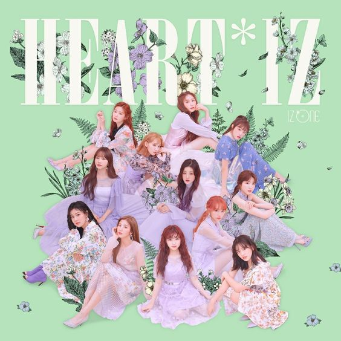

IZ*ONE -
La Vi en Rose
One of the best debut songs of 4th Generation Kpop. Its genre is Electropop and is commonly described as vibrant and groovy.
IZ*ONE -
Up
Is one of the most popular B-side track in IZ*ONE's 2nd mini album "HEART*IZ" because of the high notes.
Weeekly -
After School
Is the most popular song of the group Weeekly. It is vibrant and emits a nostalgic aura.
LOONA -
Paint the Town
LOONA song that made me stan them. It is composed of aggressive dubstep sounds.
Weeekly-
7days Tension
It is a digital single released by Weeekly and is a bop. The choreography looks fun and catchy.
STAYC -
So What

It is one of my favorite songs that they released. It is very bop and catchy.
LABOUM -
Journey to Atlantis
One of my comfort songs from a 3rd Generation Kpop Girl group.It is chill and catchy at the same time.
Everglow -
No Lie
It is an electropop and tropical house type of song. Although it has one of the worst line distribution among the group's members, it still is a bop.
TWICE -
Say You Love Me
This song is my favorite song in my most favorite album of TWICE called"YES or YES".
IZ*ONE -
O Sole Mio
The title translates to "Oh My Sun" in italian. It is a song in the genre Retro that expresses the girl group's love through their story.